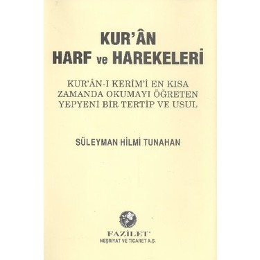
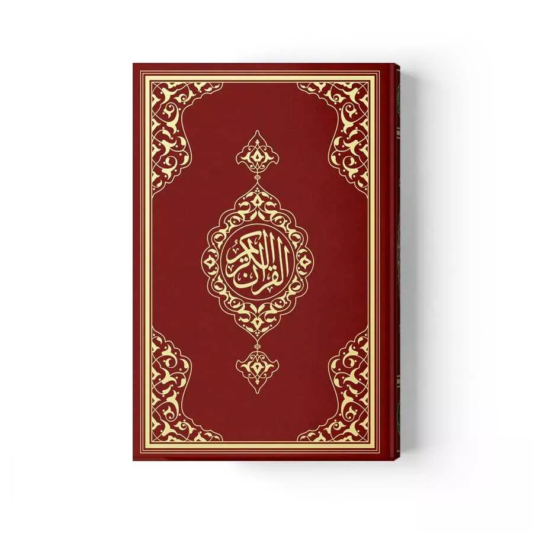
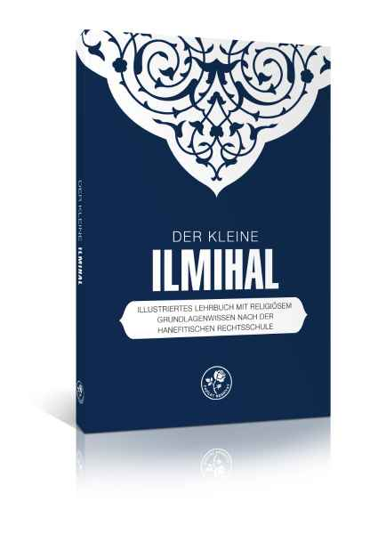
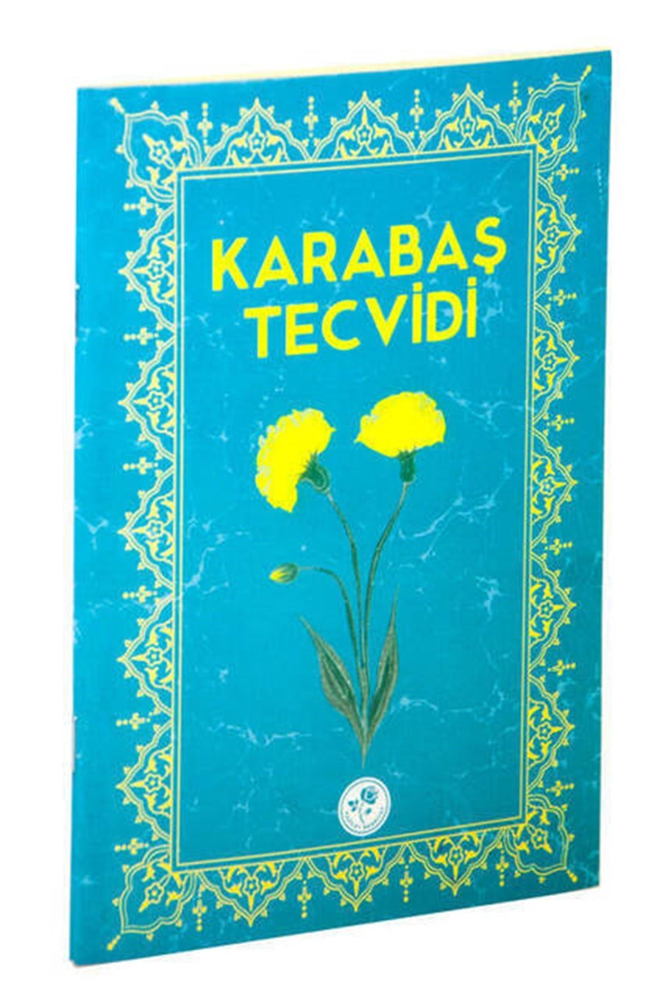

Dini Hizmetler
Camimizde günlük farz namazlar ve Cuma namazı cemaatle kılınmaktadır. Ayrıca dini konulardaki sorularında üyelerimize rehberlik ediyoruz.
Tüm aile için okul desteği ve din eğitimi alanındaki hizmetlerimizi bu sayfada bulabilirsiniz.
Wuppertal'ın kalbinde çocuklara ve gençlere eğitim ve hayat yolunda eşlik ediyoruz.
Derneğimiz, her kademeden öğrenciye ders çalışma ve ödevlerde nitelikli destek sunmaktadır. Dil becerilerinin gelişimini özellikle destekliyor, okuldan meslek eğitimine geçişte de yardımcı oluyoruz.
Din eğitimimiz, uzun yıllardır denenmiş öğretim usullerine dayanmaktadır. Klasik eserler esas alınarak sağlam ve barışçıl bir din anlayışı kazandırılmaktadır. Derslerde kullanılan eserlerden bazıları şunlardır:
Kurslar ilkokul çağındaki kız ve erkek çocuklarına yöneliktir. Dersler hafta sonları ve okul tatillerinde gerçekleştirilmektedir.
Güvenilir ve nitelikli bir eğitim için düzenli ve uzun yıllardır kendini ispat etmiş ders kitapları kullanıyoruz.

Bu eser, Arap alfabesini harflerin fonetik benzerliğine dayalı metodik bir sırayla öğretmektedir. Bu düzenli yapı sayesinde çocuklar ve yeni başlayanlar Kur'an-ı Kerim'i kısa sürede ve doğru okumayı öğrenirler. Bu usul, onlarca yıllık tecrübeyle kendini ispat etmiştir.

Kur'an-ı Kerim'i aslından okumak, derslerimizin temelini oluşturur. Çocuklar böylece doğru telaffuzu ve vahiy dilinin ahengini öğrenirler. Bu, günlük farz namazlarını kendi başlarına kılarken onlara güven verir ve Allah'ın Kelamı ile aralarında derin bir bağ kurar.

Bu eser, bir Müslümanın günlük hayatına dair temel bilgileri öğretir. Abdest, namazın kılınışı, oruç ve bir arada yaşamın ahlaki değerleri bu eserde anlatılır. Yaşa uygun anlatımı ile öğrencilere takva ve sorumluluk bilinciyle bir hayat için yol gösterir.

Tecvid dersinde Kur'an-ı Kerim'i okumanın incelikleri öğretilir. Harflerin mahreçleri, med, gunne ve vakıf kuralları bu derslerin konusudur. Bu kurallara riayet etmek, okurken Kur'an-ı Kerim'in güzelliğini ve manasını korumak için elzemdir.
Derneğimiz, çocuklara yönelik çalışmaların yanı sıra pek çok sosyal ve toplumsal alanda da hizmet vermektedir.
Camimizde günlük farz namazlar ve Cuma namazı cemaatle kılınmaktadır. Ayrıca dini konulardaki sorularında üyelerimize rehberlik ediyoruz.
Aile danışmanlığı, ortak serbest zaman etkinlikleri ve hanımlara yönelik düzenli buluşmalar birlikteliği güçlendirmekte ve günlük hayatta destek olmaktadır.
Okul sınıflarına yönelik cami ziyaretleri ve mahalle şenlikleriyle açık diyaloğu destekliyor, Wuppertal'da karşılıklı anlayışı güçlendiriyoruz.